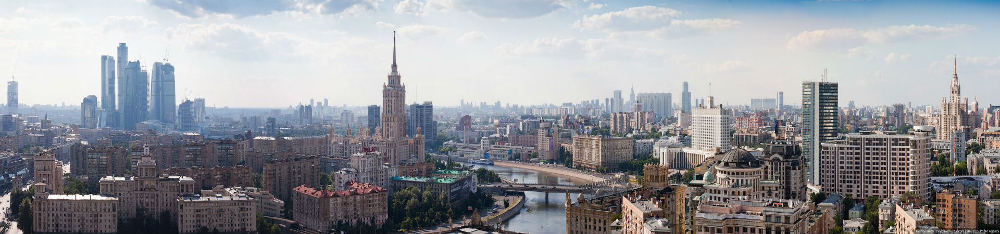

Красная площадь: Сердце Москвы
Красная площадь — это не только главная площадь столицы, но и место, где оживает история. Я любовался величием Собора Василия Блаженного и смотрел на смену караула у Мавзолея.
Читать полностьюИсследуйте столицу России через мои заметки и фотографии!

Красная площадь — это не только главная площадь столицы, но и место, где оживает история. Я любовался величием Собора Василия Блаженного и смотрел на смену караула у Мавзолея.
Читать полностью
Парк Горького — идеальное место для отдыха. Я катался на велосипеде, наслаждался видами Москвы-реки и пробовал местный стритфуд.
Читать полностьюВДНХ поразила меня своими павильонами и фонтанами. Я посетил музей космонавтики и прокатился на колесе обозрения.
Читать полностьюПосещение Большого театра стало незабываемым. Я смотрел балет "Лебединое озеро" и был очарован архитектурой здания.
Читать полностьюПарк Зарядье — это сочетание природы и технологий. Я гулял по парящему мосту и наслаждался видами Кремля.
Читать полностью
Усадьба Коломенское — это место, где я почувствовал связь с прошлым. Церковь Вознесения и яблоневые сады создают умиротворяющую атмосферу.
Читать полностьюПрогулка по Арбату — это путешествие в богемную Москву. Я слушал уличных музыкантов, покупал сувениры и пробовал кофе в уютных кафе.
Читать полностью